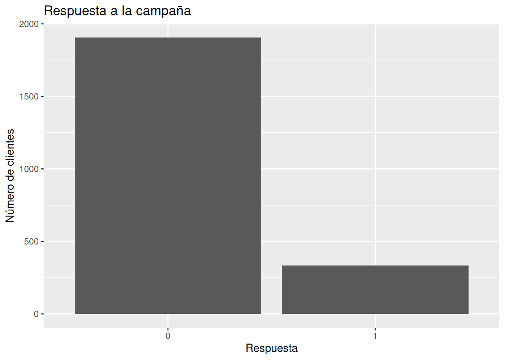
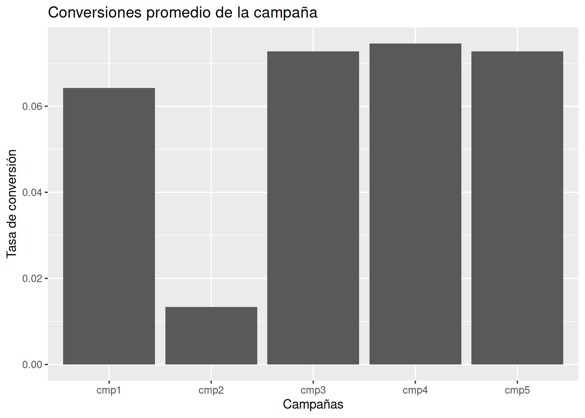
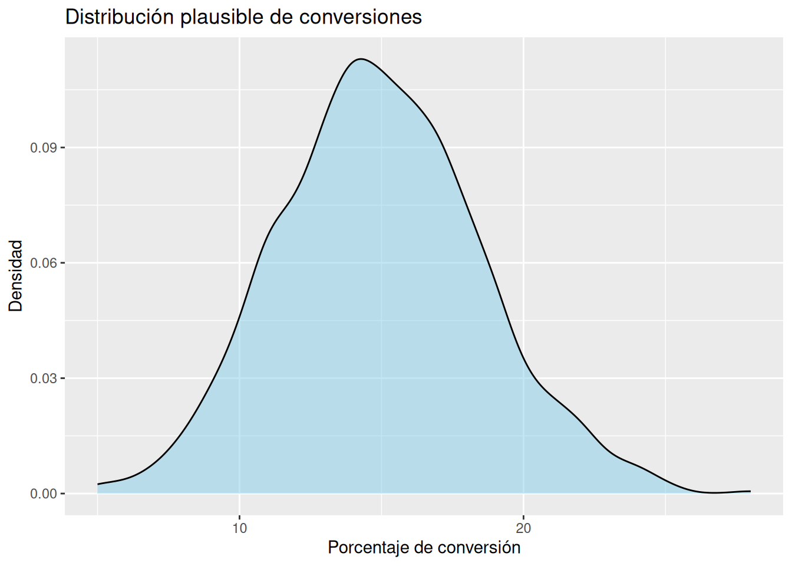
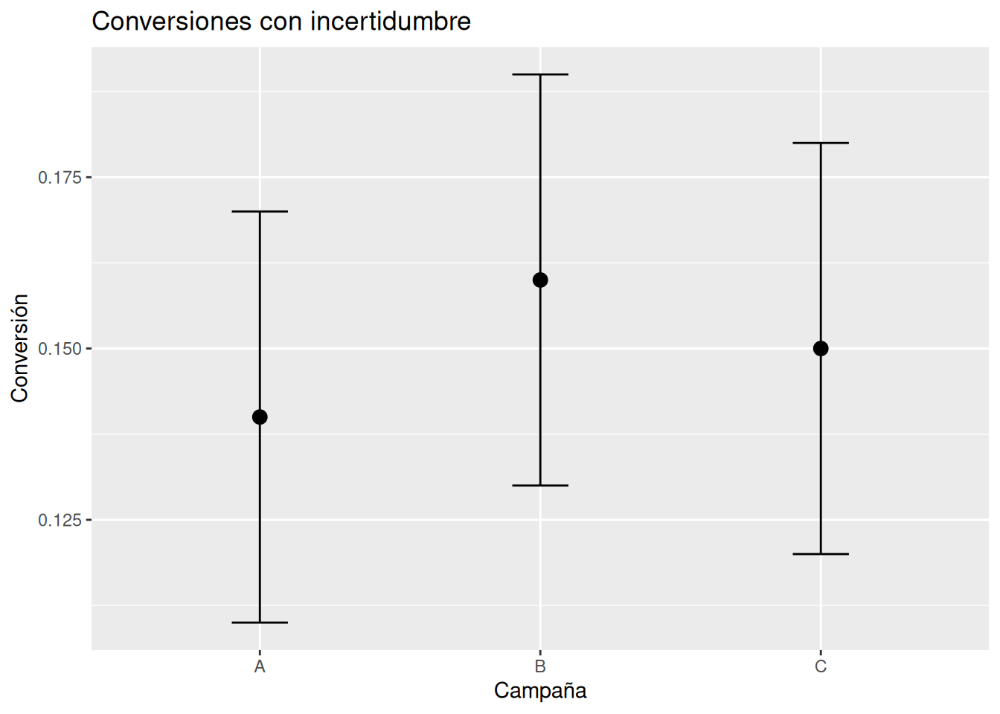

# Cargar la dataset de marketing
marketing <- read_delim(
"../data/marketing_campaign.csv",
delim = ";"
#guess_max = 10000,
#show_col_types = FALSE
)5.- Probabilidades útiles para tomar decisiones
1 — Decidir sin certeza absoluta
Las empresas toman decisiones imperfectas todos los días.
Una campaña de marketing puede funcionar muy bien este mes y mediocremente el siguiente. Un anuncio puede tener éxito en un segmento y fracasar en otro. Una promoción puede parecer prometedora… hasta que cambia el contexto económico.
Y aun así, las decisiones deben tomarse.
Ese es uno de los problemas centrales del mundo real:
esperar certeza absoluta suele paralizar la acción.
En negocios reales casi nunca existen garantías completas. Lo que sí existe es evidencia parcial.
Por eso las probabilidades son tan útiles.
No porque puedan predecir el futuro perfectamente, sino porque ayudan a pensar mejor sobre escenarios inciertos.
La pregunta importante deja de ser:
“¿Qué va a pasar exactamente?”
y empieza a ser:
“¿Qué escenarios parecen más plausibles con la evidencia disponible?”
Ese cambio de mentalidad es profundamente importante.
2 — Pensamiento probabilístico
Las personas solemos buscar respuestas binarias:
- funcionará / no funcionará
- comprar / no comprar
- aprobar / rechazar
- invertir / no invertir
Pero la realidad rara vez es tan clara.
Una campaña no “funciona” o “fracasa” completamente. Más bien:
- puede tener una probabilidad razonable de éxito
- puede funcionar mejor en ciertos segmentos
- puede mostrar señales prometedoras, aunque todavía exista incertidumbre
Pensar probabilísticamente significa aceptar algo incómodo pero poderoso:
podemos actuar racionalmente incluso cuando no sabemos todo.
3 — Contexto de negocio
Antes de analizar datos, necesitamos entender algunos conceptos básicos.
Conversion Rate
El conversion rate o tasa de conversión representa el porcentaje de personas que realizan la acción deseada.
Por ejemplo:
- hacer clic
- comprar
- responder una campaña
- registrarse
- aceptar una oferta
Si una campaña llega a 100 personas y 12 responden positivamente:
Conversion Rate = 12 / 100 = 0.12 = 12%
La tasa de conversión sería 12%.
¿Por qué importa?
Porque las empresas rara vez pueden contactar a todos los clientes infinitamente.
Las campañas cuestan dinero:
- publicidad
- correos
- descuentos
- tiempo
- personal
Por eso interesa identificar campañas que parezcan más efectivas.
Pero aquí aparece un problema importante:
una campaña puede parecer mejor simplemente por variabilidad aleatoria.
Y ahí entra la incertidumbre.
ROI (Return on Investment)
El ROI intenta responder una pregunta simple:
“¿Valió la pena invertir en esta campaña?”
Simplificadamente:
ROI = (Ganancia - Inversión) / Inversión
Pero incluso el ROI está rodeado de incertidumbre:
- algunos clientes compran más tarde
- algunos compran por casualidad
- algunos jamás iban a comprar
- algunos resultados cambian con el tiempo
Por eso en este capítulo NO buscaremos “certezas”.
Buscaremos evidencia útil.
4 — Cargando y explorando el dataset
Cargar datos
Explorar estructura
glimpse(marketing) # produce:Rows: 2,240
Columns: 29
$ ID <dbl> 5524, 2174, 4141, 6182, 5324, 7446, 965, 6177, 485…
$ Year_Birth <dbl> 1957, 1954, 1965, 1984, 1981, 1967, 1971, 1985, 19…
$ Education <chr> "Graduation", "Graduation", "Graduation", "Graduat…
$ Marital_Status <chr> "Single", "Single", "Together", "Together", "Marri…
$ Income <dbl> 58138, 46344, 71613, 26646, 58293, 62513, 55635, 3…
$ Kidhome <dbl> 0, 1, 0, 1, 1, 0, 0, 1, 1, 1, 1, 0, 0, 1, 0, 0, 1,…
$ Teenhome <dbl> 0, 1, 0, 0, 0, 1, 1, 0, 0, 1, 0, 0, 0, 1, 0, 0, 1,…
$ Dt_Customer <date> 2012-09-04, 2014-03-08, 2013-08-21, 2014-02-10, 2…
$ Recency <dbl> 58, 38, 26, 26, 94, 16, 34, 32, 19, 68, 11, 59, 82…
$ MntWines <dbl> 635, 11, 426, 11, 173, 520, 235, 76, 14, 28, 5, 6,…
$ MntFruits <dbl> 88, 1, 49, 4, 43, 42, 65, 10, 0, 0, 5, 16, 61, 2, …
$ MntMeatProducts <dbl> 546, 6, 127, 20, 118, 98, 164, 56, 24, 6, 6, 11, 4…
$ MntFishProducts <dbl> 172, 2, 111, 10, 46, 0, 50, 3, 3, 1, 0, 11, 225, 3…
$ MntSweetProducts <dbl> 88, 1, 21, 3, 27, 42, 49, 1, 3, 1, 2, 1, 112, 5, 1…
$ MntGoldProds <dbl> 88, 6, 42, 5, 15, 14, 27, 23, 2, 13, 1, 16, 30, 14…
$ NumDealsPurchases <dbl> 3, 2, 1, 2, 5, 2, 4, 2, 1, 1, 1, 1, 1, 3, 1, 1, 3,…
$ NumWebPurchases <dbl> 8, 1, 8, 2, 5, 6, 7, 4, 3, 1, 1, 2, 3, 6, 1, 7, 3,…
$ NumCatalogPurchases <dbl> 10, 1, 2, 0, 3, 4, 3, 0, 0, 0, 0, 0, 4, 1, 0, 6, 0…
$ NumStorePurchases <dbl> 4, 2, 10, 4, 6, 10, 7, 4, 2, 0, 2, 3, 8, 5, 3, 12,…
$ NumWebVisitsMonth <dbl> 7, 5, 4, 6, 5, 6, 6, 8, 9, 20, 7, 8, 2, 6, 8, 3, 8…
$ AcceptedCmp3 <dbl> 0, 0, 0, 0, 0, 0, 0, 0, 0, 1, 0, 0, 0, 0, 0, 0, 0,…
$ AcceptedCmp4 <dbl> 0, 0, 0, 0, 0, 0, 0, 0, 0, 0, 0, 0, 0, 0, 0, 0, 0,…
$ AcceptedCmp5 <dbl> 0, 0, 0, 0, 0, 0, 0, 0, 0, 0, 0, 0, 0, 0, 0, 1, 0,…
$ AcceptedCmp1 <dbl> 0, 0, 0, 0, 0, 0, 0, 0, 0, 0, 0, 0, 0, 0, 0, 1, 0,…
$ AcceptedCmp2 <dbl> 0, 0, 0, 0, 0, 0, 0, 0, 0, 0, 0, 0, 0, 0, 0, 0, 0,…
$ Complain <dbl> 0, 0, 0, 0, 0, 0, 0, 0, 0, 0, 0, 0, 0, 0, 0, 0, 0,…
$ Z_CostContact <dbl> 3, 3, 3, 3, 3, 3, 3, 3, 3, 3, 3, 3, 3, 3, 3, 3, 3,…
$ Z_Revenue <dbl> 11, 11, 11, 11, 11, 11, 11, 11, 11, 11, 11, 11, 11…
$ Response <dbl> 1, 0, 0, 0, 0, 0, 0, 0, 1, 0, 0, 0, 0, 0, 0, 1, 0,…Resumen rápido
skim(marketing) # produce:| Name | marketing |
| Number of rows | 2240 |
| Number of columns | 29 |
| _______________________ | |
| Column type frequency: | |
| character | 2 |
| Date | 1 |
| numeric | 26 |
| ________________________ | |
| Group variables | None |
Variable type: character
| skim_variable | n_missing | complete_rate | min | max | empty | n_unique | whitespace |
|---|---|---|---|---|---|---|---|
| Education | 0 | 1 | 3 | 10 | 0 | 5 | 0 |
| Marital_Status | 0 | 1 | 4 | 8 | 0 | 8 | 0 |
Variable type: Date
| skim_variable | n_missing | complete_rate | min | max | median | n_unique |
|---|---|---|---|---|---|---|
| Dt_Customer | 0 | 1 | 2012-07-30 | 2014-06-29 | 2013-07-08 | 663 |
Variable type: numeric
| skim_variable | n_missing | complete_rate | mean | sd | p0 | p25 | p50 | p75 | p100 | hist |
|---|---|---|---|---|---|---|---|---|---|---|
| ID | 0 | 1.00 | 5592.16 | 3246.66 | 0 | 2828.25 | 5458.5 | 8427.75 | 11191 | ▇▇▇▇▇ |
| Year_Birth | 0 | 1.00 | 1968.81 | 11.98 | 1893 | 1959.00 | 1970.0 | 1977.00 | 1996 | ▁▁▂▇▅ |
| Income | 24 | 0.99 | 52247.25 | 25173.08 | 1730 | 35303.00 | 51381.5 | 68522.00 | 666666 | ▇▁▁▁▁ |
| Kidhome | 0 | 1.00 | 0.44 | 0.54 | 0 | 0.00 | 0.0 | 1.00 | 2 | ▇▁▆▁▁ |
| Teenhome | 0 | 1.00 | 0.51 | 0.54 | 0 | 0.00 | 0.0 | 1.00 | 2 | ▇▁▇▁▁ |
| Recency | 0 | 1.00 | 49.11 | 28.96 | 0 | 24.00 | 49.0 | 74.00 | 99 | ▇▇▇▇▇ |
| MntWines | 0 | 1.00 | 303.94 | 336.60 | 0 | 23.75 | 173.5 | 504.25 | 1493 | ▇▂▂▁▁ |
| MntFruits | 0 | 1.00 | 26.30 | 39.77 | 0 | 1.00 | 8.0 | 33.00 | 199 | ▇▁▁▁▁ |
| MntMeatProducts | 0 | 1.00 | 166.95 | 225.72 | 0 | 16.00 | 67.0 | 232.00 | 1725 | ▇▁▁▁▁ |
| MntFishProducts | 0 | 1.00 | 37.53 | 54.63 | 0 | 3.00 | 12.0 | 50.00 | 259 | ▇▁▁▁▁ |
| MntSweetProducts | 0 | 1.00 | 27.06 | 41.28 | 0 | 1.00 | 8.0 | 33.00 | 263 | ▇▁▁▁▁ |
| MntGoldProds | 0 | 1.00 | 44.02 | 52.17 | 0 | 9.00 | 24.0 | 56.00 | 362 | ▇▁▁▁▁ |
| NumDealsPurchases | 0 | 1.00 | 2.33 | 1.93 | 0 | 1.00 | 2.0 | 3.00 | 15 | ▇▂▁▁▁ |
| NumWebPurchases | 0 | 1.00 | 4.08 | 2.78 | 0 | 2.00 | 4.0 | 6.00 | 27 | ▇▃▁▁▁ |
| NumCatalogPurchases | 0 | 1.00 | 2.66 | 2.92 | 0 | 0.00 | 2.0 | 4.00 | 28 | ▇▂▁▁▁ |
| NumStorePurchases | 0 | 1.00 | 5.79 | 3.25 | 0 | 3.00 | 5.0 | 8.00 | 13 | ▂▇▂▃▂ |
| NumWebVisitsMonth | 0 | 1.00 | 5.32 | 2.43 | 0 | 3.00 | 6.0 | 7.00 | 20 | ▅▇▁▁▁ |
| AcceptedCmp3 | 0 | 1.00 | 0.07 | 0.26 | 0 | 0.00 | 0.0 | 0.00 | 1 | ▇▁▁▁▁ |
| AcceptedCmp4 | 0 | 1.00 | 0.07 | 0.26 | 0 | 0.00 | 0.0 | 0.00 | 1 | ▇▁▁▁▁ |
| AcceptedCmp5 | 0 | 1.00 | 0.07 | 0.26 | 0 | 0.00 | 0.0 | 0.00 | 1 | ▇▁▁▁▁ |
| AcceptedCmp1 | 0 | 1.00 | 0.06 | 0.25 | 0 | 0.00 | 0.0 | 0.00 | 1 | ▇▁▁▁▁ |
| AcceptedCmp2 | 0 | 1.00 | 0.01 | 0.11 | 0 | 0.00 | 0.0 | 0.00 | 1 | ▇▁▁▁▁ |
| Complain | 0 | 1.00 | 0.01 | 0.10 | 0 | 0.00 | 0.0 | 0.00 | 1 | ▇▁▁▁▁ |
| Z_CostContact | 0 | 1.00 | 3.00 | 0.00 | 3 | 3.00 | 3.0 | 3.00 | 3 | ▁▁▇▁▁ |
| Z_Revenue | 0 | 1.00 | 11.00 | 0.00 | 11 | 11.00 | 11.0 | 11.00 | 11 | ▁▁▇▁▁ |
| Response | 0 | 1.00 | 0.15 | 0.36 | 0 | 0.00 | 0.0 | 0.00 | 1 | ▇▁▁▁▂ |
Este paso ayuda a:
- detectar valores faltantes
- entender escalas
- observar distribuciones
- identificar variables útiles
5 — La variable más importante: Response
En este capítulo nos interesa especialmente la variable: Response
Usualmente:
- 1 = respondió a la campaña
- 0 = no respondió
Esta variable representa una decisión humana real.
Y justamente por eso es incierta.
6 — Primera tasa de conversión
Calcular proporción general
# Calcular la proporción general
marketing %>%
summarise(
conversion_rate = mean(Response)
) # produce:# A tibble: 1 × 1
conversion_rate
<dbl>
1 0.149Esto calcula:
Conversion Rate = Clientes que respondieron / Total de clientes
Interpretación
Supongamos que obtenemos algo cercano a:
0.15
Eso significa aproximadamente:
15% de los clientes respondió positivamente.
Pero cuidado.
Eso NO significa que futuras campañas tendrán exactamente 15%.
La realidad tiene variabilidad.
Ese 15% es una estimación imperfecta.
7 — La incertidumbre alrededor de una proporción
Aquí aparece una de las ideas más importantes del libro:
una estimación nunca es completamente exacta.
Si otra muestra de clientes hubiera sido seleccionada:
- el resultado podría ser 14%
- o 17%
- o 13%
Incluso sin cambiar la campaña.
La variabilidad natural existe.
8 — Visualizando respuestas
Conteo básico
# Gráfico de barras de Conteo básico de la variable Response
marketing %>%
ggplot(aes(x = factor(Response))) +
geom_bar() +
labs(
title = "Respuesta a la campaña",
x = "Respuesta",
y = "Número de clientes"
)
Interpretación visual
Este gráfico ayuda a ver:
- cuántas personas respondieron
- cuántas no
- qué tan rara es la conversión
En marketing real, las conversiones suelen ser relativamente bajas.
Eso es normal.
9 — Comparando campañas
Ahora empieza la parte más importante del capítulo.
Queremos comparar campañas probabilísticamente.
NO queremos decir:
❌ “esta campaña es definitivamente mejor”
Queremos decir algo más realista:
✅ “la evidencia sugiere que podría funcionar mejor”
10 — Tasas de conversión por campaña
Supongamos que el dataset contiene variables como:
- AcceptedCmp1
- AcceptedCmp2
- AcceptedCmp3
- etc.
Podemos explorar tasas promedio.
marketing %>%
summarise(
cmp1 = mean(AcceptedCmp1),
cmp2 = mean(AcceptedCmp2),
cmp3 = mean(AcceptedCmp3),
cmp4 = mean(AcceptedCmp4),
cmp5 = mean(AcceptedCmp5)
) # produce:# A tibble: 1 × 5
cmp1 cmp2 cmp3 cmp4 cmp5
<dbl> <dbl> <dbl> <dbl> <dbl>
1 0.0643 0.0134 0.0728 0.0746 0.0728# Alargar el resumen
long_marketing <- marketing %>%
summarise(
cmp1 = mean(AcceptedCmp1),
cmp2 = mean(AcceptedCmp2),
cmp3 = mean(AcceptedCmp3),
cmp4 = mean(AcceptedCmp4),
cmp5 = mean(AcceptedCmp5)
) %>%
pivot_longer(
everything(),
names_to = "campania",
values_to = "conversion"
)
long_marketing# A tibble: 5 × 2
campania conversion
<chr> <dbl>
1 cmp1 0.0643
2 cmp2 0.0134
3 cmp3 0.0728
4 cmp4 0.0746
5 cmp5 0.072811 — Visualización comparativa
# Grafico de columnas que compara las conversiones de las campañas
long_marketing %>%
ggplot(aes(x = campania, y = conversion)) +
geom_col() +
labs(
title = "Conversiones promedio de la campaña",
x = "Campañas",
y = "Tasa de conversión"
)
12 — Un error muy común
Después de ver este gráfico, muchas personas concluyen demasiado rápido:
“La campaña 3 es la mejor.”
Pero eso puede ser engañoso.
Porque todavía no hemos considerado:
- incertidumbre
- tamaño de muestra
- variabilidad natural
- plausibilidad de diferencias reales
Aquí aparece una idea profundamente bayesiana:
diferencias pequeñas no siempre representan evidencia fuerte.
13 — Introducción intuitiva a rangos plausibles
Imagina que una campaña muestra una conversión estimada de 15%.
¿Eso significa exactamente 15%?
No.
Tal vez:
- 13% también es plausible
- 16% también
- 17% quizá menos probable, pero posible
La estimación tiene una “zona de incertidumbre”.
14 — Simulación simple de incertidumbre
Podemos simular escenarios plausibles.
set.seed(123)
# Simular 1000 conversiones
simulaciones <- tibble(
conversion = rbinom(
1000,
size = 100, # 100 clientes
prob = 0.15 # probabilidad de conversión de cada cliente
)
)
simulaciones[1:6,] # produce:# A tibble: 6 × 1
conversion
<int>
1 13
2 18
3 14
4 19
5 21
6 9Visualización
# Densidad de la conversión de las simulaciones
simulaciones %>%
ggplot(aes(x = conversion)) +
geom_density(fill = "skyblue", alpha = 0.5) +
labs(
title = "Distribución plausible de conversiones",
x = "Porcentaje de conversión",
y = "Densidad"
)
15 — ¿Qué estamos viendo?
Este gráfico es extremadamente importante.
NO muestra:
❌ un único futuro
Muestra:
✅ muchos futuros plausibles
Algunos escenarios tienen:
- 12%
- 15%
- 18%
Todos pueden ocurrir razonablemente.
Ese es el corazón del pensamiento probabilístico.
16 — Introducción intuitiva a intervalos plausibles
Podemos resumir incertidumbre usando rangos plausibles.
Por ejemplo:
“La tasa de conversión probablemente esté entre 12% y 18%.”
Eso es mucho más honesto que fingir precisión absoluta.
17 — Visualizando incertidumbre explícitamente
# Simular conversiones
conversiones <- tibble(
campania = c("A", "B", "C"),
promedio = c(0.14, 0.16, 0.15),
inferior = c(0.11, 0.13, 0.12),
superior = c(0.17, 0.19, 0.18)
)Gráfico con incertidumbre
# Gráfico con incertidumbre
conversiones %>%
ggplot(aes(x = campania, y = promedio)) +
geom_point(size = 3) + # size es el tamaño del punto
geom_errorbar(
aes(
ymin = inferior,
ymax = superior
),
width = 0.2 # es el tamaño del bigote
) +
labs(
title = "Conversiones con incertidumbre",
x = "Campaña",
y = "Conversión"
)
18 — Interpretación importante
Este gráfico transmite algo fundamental:
las campañas no tienen resultados exactos.
Tienen resultados plausibles.
Y a veces esos rangos se superponen mucho.
Cuando eso ocurre:
- la evidencia puede ser débil
- las diferencias pueden no ser tan claras
- conviene actuar con cautela
19 — Introducción suave a comparación probabilística
Supongamos:
- Campaña A ≈ 14%
- Campaña B ≈ 16%
¿B es mejor?
Tal vez.
Pero la pregunta más útil es:
“¿Qué tan plausible es que realmente sea mejor?”
Ese cambio parece pequeño, pero transforma completamente la manera de pensar.
20 — Lenguaje probabilístico útil
En analytics moderno conviene usar lenguaje como:
✅ “La evidencia sugiere…” ✅ “Parece plausible…” ✅ “Existe incertidumbre…” ✅ “Probablemente…” ✅ “Hay cierta evidencia de…”
Evitar:
❌ “Definitivamente” ❌ “Completamente demostrado” ❌ “Garantizado”
21 — Conexión suave con Bayes
Hasta ahora hemos trabajado principalmente con:
- proporciones
- simulaciones
- incertidumbre visual
Pero ya estamos pensando bayesianamente.
Porque estamos:
- considerando múltiples escenarios plausibles
- aceptando incertidumbre
- actualizando creencias usando evidencia
- evitando conclusiones absolutas
Más adelante formalizaremos estas ideas usando:
- distribuciones posteriores
- modelos probabilísticos
- rstanarm
22 — Posibles errores de interpretación
Error 1 — Confundir estimación con certeza
Una conversión de 15% NO significa:
“el futuro será exactamente 15%”
Error 2 — Ignorar incertidumbre
Una diferencia pequeña puede no ser evidencia fuerte.
Error 3 — Sobreinterpretar muestras pequeñas
Pocas observaciones producen mucha variabilidad.
Error 4 — Pensamiento determinista
Los negocios reales funcionan con incertidumbre parcial, no con garantías absolutas.
23 — Reflexión bayesiana
La incertidumbre no es un defecto del análisis.
Es parte natural de la realidad.
El objetivo del análisis probabilístico no es eliminar incertidumbre completamente.
Es aprender a:
- cuantificarla parcialmente
- visualizarla
- interpretarla
- tomar mejores decisiones a pesar de ella
Pensar probabilísticamente significa aceptar algo profundamente humano:
podemos actuar racionalmente incluso sin conocer el futuro perfectamente.
24 — Ejercicios
Ejercicio 1
Calcula la tasa general de conversión del dataset.
Interpreta el resultado verbalmente.
Ejercicio 2
Crea un gráfico de barras para comparar campañas.
¿Qué campañas parecen más prometedoras?
Ejercicio 3
Simula múltiples escenarios plausibles usando rbinom().
¿Qué tan variable parece el futuro?
Ejercicio 4
Construye un gráfico con intervalos plausibles.
¿Qué campañas muestran mayor incertidumbre?
Ejercicio 5
Reflexiona:
¿Por qué buscar certeza absoluta puede ser peligroso en negocios?